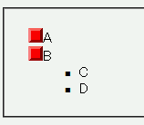
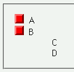

list-style-imageプロパティで存在しない画像ファイルを指定すると、代替表示されるはずのlist-style-typeプロパティで指定するリストマーカーも表示されない。
<ul style="list-style-image:url(../img/img02.png);"> <li>A</li> <li>B<ul style="list-style-image:url(none.png); list-style-type:square;"> <li>C</li> <li>D</li> </ul></li> </ul>
親のul要素では存在する画像ファイルを、子のul要素では存在しない画像ファイルをリストマーカーに指定しました。ただし、子のul要素にはsquareもリストマーカーとして指定されています。
WinIE6.0での表示
Moz1.0での表示
N6.2.3、Moz1.0では標準・互換モードともにリストマークがまったく表示されない現象が発生します。